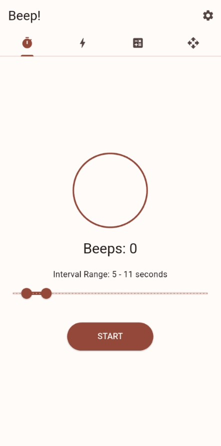
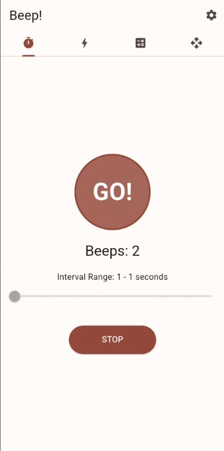
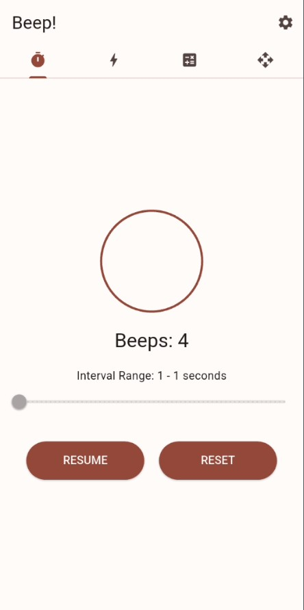

تایمر صوتی (بوق) 🔊
با ریتمهای تکراری و تایمرهای معمولی خداحافظی کن! اینجا یاد میگیری چطور با فواصل صوتی کاملاً تصادفی و غیرقابلبینی، سرعت واکنش و هوشیاری مغزت رو به بالاترین سطح ممکن برسونی.

پیکربندی بازه عدم قطعیت (Interval Range)
مغز انسان استادِ عادت کردن به الگوهای تکراریه؛ اگه بین بوقها یک ثانیه ثابت زمان باشه، بدن بعد از چند بار حرکت، اون رو پیشبینی میکنه و عملاً تمرین چابکی بیاثر میشه. در این بخش با استفاده از یک اسلایدر دو زبانه (Range Slider) بسیار روان، یک «بازه زمانی» مشخص میکنی. برای مثال، وقتی بازه رو روی ۵ تا ۱۱ ثانیه تنظیم میکنی، الگوریتم داخلی بیپ دست به کار میشه و بین هر بوق، یک زمان کاملاً تصادفی انتخاب میکنه تا غافلگیری به حداکثر برسه!
- شمارنده لایو (Beeps): این بخش تعداد دفعاتی که بوق در سشن فعلی شلیک شده رو دقیقاً ثبت میکنه تا حساب رکوردهات از دستت در نره (در ابتدا روی 0 تنظیم شده).
- شخصیسازی محدوده: هر چقدر فاصله بین حداقل و حداکثر زمان بیشتر باشه، غیرقابلپیشبینی بودن تمرین سختتر و جذابتر میشه!

شروع چالش و شلیک سیگنال صوتی (GO)
وقتی دکمه START رو لمس میکنی، فرآیند لایو شروع میشه. دایره مرکزی بلافاصله تغییر وضعیت میده، به رنگ آجری/قهوهای متمایل میشه و عبارت مهیج GO! رو به نمایش میذاره. حالا کلید کار دست موتور زمانبندی بیپه؛ شمارنده بوقها در لحظه بهروزرسانی میشه و به محض اینکه به تیکِ رندوم بعدی برسه، افکت صوتی انتخابی تو رو در فضا منفجر میکنه!
⚡ قانون تمرین واکنش: چشمهات رو ببند یا تمرکزت رو بذار روی حرکت؛ به محض اینکه صدای بوق رو شنیدی، باید سریعترین عکسالعمل ممکنی که در توان داری رو نشون بدی. این یعنی ساختنِ اتوبانهای عصبی جدید در مغز برای واکنشهای فوقسریع!

کنترل کامل روی سشن، استراحت و بازنشانی
وسط تمرین خسته شدی یا نیاز به نفسگیری داری؟ اصلاً نگران نباش! با زدن دکمه STOP، تایمر بیدرنگ در همان صدم ثانیهای که هست فریز میشه و فرآیند بوق زدن متوقف میشه. در این حالت، کنترل پنل هوشمند بیپ دو تا دکمه کاربردی رو برات رو میکنه تا بتونی استیتها و وضعیت تمرینت رو به بهترین شکل مدیریت کنی.
- گزینه RESUME (ادامه): سشن تمرینی تو رو دقیقاً از همون نقطهای که متوقف کردی (با حفظ تعداد بوقهای شلیکشده و زمان باقیمانده) از سر میگیره تا زنجیره تمرینت خراب نشه.
- گزینه RESET (بازنشانی): همه چیز رو پاک میکنه! شمارنده بوقها دوباره صفر میشه و دایره به حالت آمادهباش اولیه برمیگرده تا بتونی یه رکوردگیری کاملاً جدید رو شروع کنی.